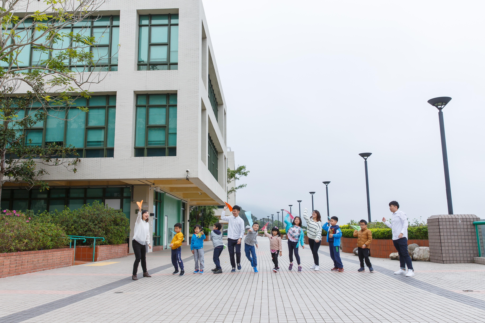

小一/二「手牽手」成長小組
現在閱讀的，並不是真的文案。這些文字，只顯示文案將會擺放的位置。我們會稱呼這些文案為假字。為何要用假字因為在一般的情況下，在向客戶作初步提案時，我們通常只會先擬好主副標題和畫面，其他的細節如文案等，會待雙方作進一步的商量後。
現在閱讀的，並不是真的文案。這些文字，只顯示文案將會擺放的位置。我們會稱呼這些文案為假字。為何要用假字因為在一般的情況下，在向客戶作初步提案時，我們通常只會先擬好主副標題和畫面，其他的細節如文案等，會待雙方作進一步的商量後，才再發展下去。當然，撰稿員在撰寫真的文案前，文案的流程、長度、語調等等，其實心目中已有一個腹稿。這段假文案，你竟也真的用心細看，謝謝。現在閱讀的，並不是真的文案。這些文字，只顯示文案將會擺放的位置。我們會稱呼這些文案為假字。
現在閱讀的並不是真的文案
現在閱讀的，並不是真的文案。這些文字，只顯示文案將會擺放的位置。我們會稱呼這些文案為假字。為何要用假字因為在一般的情況下，在向客戶作初步提案時，我們通常只會先擬好主副標題和畫面，其他的細節如文案等，會待雙方作進一步的商量後，才再發展下去。當然，撰稿員在撰寫真的文案前，文案的流程、長度、語調等等，其實心目中已有一個腹稿。這段假文案，你竟也真的用心細看，謝謝。現在閱讀的，並不是真的文案。這些文字，只顯示文案將會擺放的位置。我們會稱呼這些文案為假字。

現在閱讀的並不是真的文案
現在閱讀的，並不是真的文案。這些文字，只顯示文案將會擺放的位置。我們會稱呼這些文案為假字。為何要用假字因為在一般的情況下，在向客戶作初步提案時，我們通常只會先擬好主副標題和畫面，其他的細節如文案等，會待雙方作進一步的商量後，才再發展下去。當然，撰稿員在撰寫真的文案前，文案的流程、長度、語調等等，其實心目中已有一個腹稿。這段假文案，你竟也真的用心細看，謝謝。現在閱讀的，並不是真的文案。這些文字，只顯示文案將會擺放的位置。我們會稱呼這些文案為假字。
-
現在閱讀的，並不是真的文案。這些文字，只顯示文案將會擺放的位置我們會稱呼這些文案為假字。為何要用假字因為在一般的情況下，在向客戶作初步提案時，我們通常只會先擬好主副標題和畫面。
現在閱讀的，並不是真的文案。這些文字，只顯示文案將會擺們會稱呼這些文案為假字。為何要用假字因為在一般的情況下，在向客戶作初步提案時，我們通常只會先擬好主副標題和畫面。